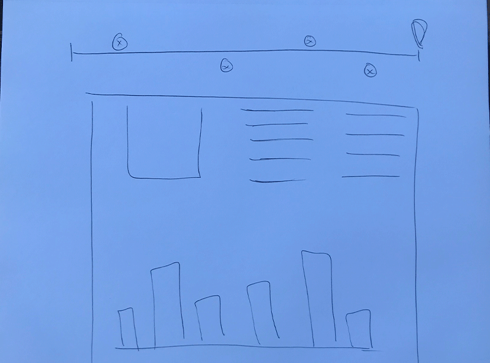

Enterance Interaction
This interaction will greet the user when they get to my site. It will be colored red and blue to represent the two major political parties and I am contemplating having two buttons to switch the content based on which party they are more interested in learning about.
Clickable Timeline
The top of the page will have an absolute positined timeline that the user can interact with. I hope to produce informational boxes when someone hovers over a certain date. I would also like to have this gradually shifting colors just to add another element of design to the page.
Informational Bar Chart
I hope this entire box will look like a newspaper article, however, it will have the digital spin and interactivity added to it in order to fit more content on a smaller space while still maintaining a clean and neat appearance. The bar chart will hopefully be clickable and informational for the user to engage with. I also want it to grow as the user continutes to scroll, or maybe even change the information and have responsive design. I also would like to have a quiz in this bar graph so it is even more interactive for the user.